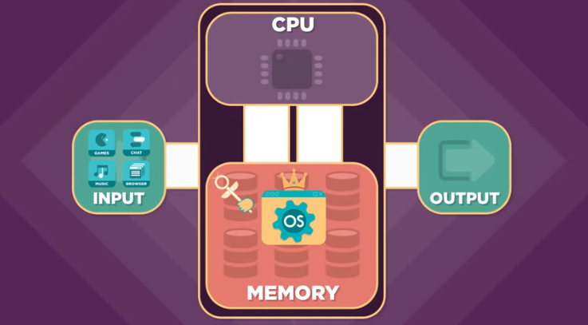
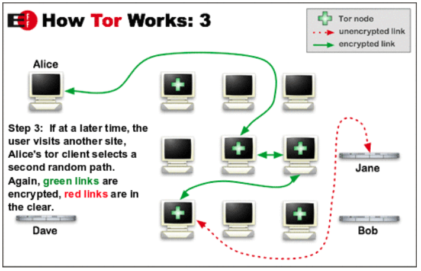
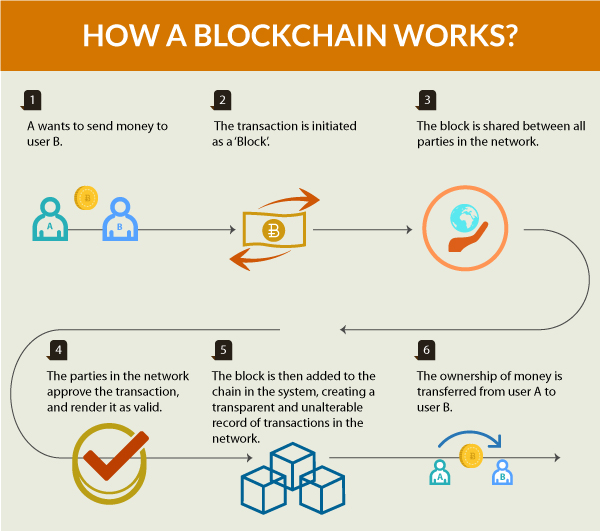
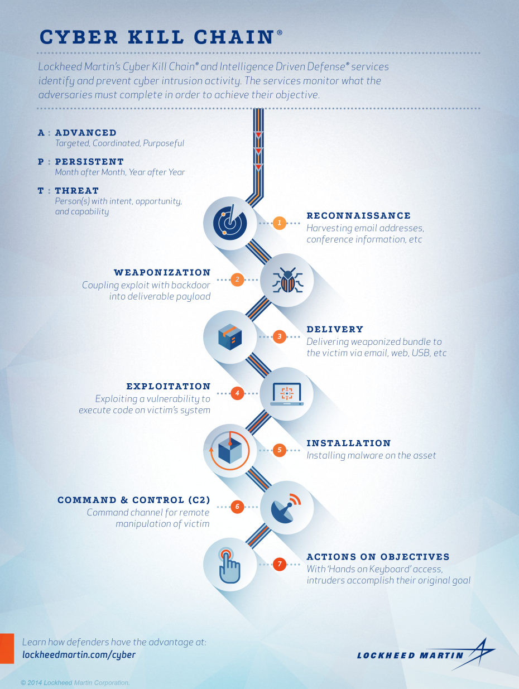

Units, Nodes and Networks of Computation
In the first three weeks we studied the three main components of a stand-alone computer system: Input (Data) -> Processing (Algorithms) -> Output (Visualizations). This week, we'll combine these three concepts into a single abstraction, a "Process." We'll see how this abstract concept can be viewed as a fundamental unit of computation instantiated on a physical or virtual computer under the control and coordination of an Operating System (OS).
Furthermore, we'll see how we can view physical and virtual computers as higher-level abstract units of computations. These computers can in turn be networked together to increase computational power exponentially. This results in a distributed system with new emergent properties. Current trends in the Internet of Things (IoT), Blockchain/Bitcoin, parallel processing and cloud computing will also be situated within the context of this computational hierarchy.
We'll use our knowledge of operating systems and networking to explore technological threats in the areas of the Darknet, viruses/malware and cyber warfare. In particular we'll do a forensic examination of the StuxNet worm and explore Wikileaks to acquire a more informed and critical opinion about cybersecurity, blackhat/whitehat hacking and surveillance. This will serve as a casebook study on the nature and extent of such cyber attacks and seed our discussion on how to maintain an open society in the face of such real and potential threats.
Reading Assignments:
Operating Systems (MT = Monday/Tuesday)
- How Computers Work: Hardware and Software (5:22) Code.org, Jan 2018
Networks (MT = Monday/Tuesday)
- The Internet: IP Addresses & DNS (6:44) Code.org, Sep 2015
- The Internet: Packets, Routing and Reliability Code.org (6:25) Sep 2015
- Emergence - How Stupid Things Become Smart Together, Kurzgesagt (7:30) Nov 2017
Security (TW = Thursday/Wednesday)
- Asymmetric Encryption (4:40) Simply Explained, Oct 2017
- What is Blockchain? Centre of Int'l Governance Innovation, (6:26) Jan 2018
- The Internet: Cybersecurity and Crime Code.org (5:01) Aug 2015
- Malware: The Difference Between Viruses, Worms and Trojans Kapersky Labs (2:45)
Cyberwar (TF = Thursday/Friday)
- StuxNet: Anatomy of a Computer Virus Patrick Clair (3:21)
- Cyberwarfare and Applied Just War Theory: Assessing the StuxNet Worm Through thru Jus Ad Bellum and Jus In Bello, Carson Marr, UPenn, SPICE: Student Perspectives on Institutions, Choices and Ethics, 2019
- Wikileaks CIA Files: The 6 Biggest Spying Secrets Revealed by the Release of Vault 7, Andrew Griffin, UK Independent.co.uk, Mar 2017
- A Murderous System is being Created Before Our Very Eyes, UN Special Rapporteur on Torture, Nils Melzer Republik.com, Dec 2019
Coding Assignments due September 29th:
- Chapter 1: Matplotlib, Intermediate Python, DataCamp.com
- Mini-Project #1: Visualization with Tableau (min 3 pane story visualization). See the links under 'Finding Data Sources' on last week's Visualization page for links to datasets and directions.
In Class Demos:
- UNIX shell/filesystem: env, pwd, ls, cd, touch, mv, cp, mkdir, rm, more/less
- UNIX processes: ps, top (Activity Monitor/Task Manager), fg/bg, nice
- UNIX networking: hostname, ifconfig, ping, traceroute, netstat, nslookup, whois, sudo tcpdump
- Web: Browser Fingerprint (BrowserSPY), Chrome/Inspect, BuiltWith, uBlock Plugin
- Dark Web: TOR Browser , 10 Cool Websites and Dark Web Links
- JSON: Spec, API Examples,and Demo
- APIs: REST (demo, directory) vs GraphQL (demo, directory) Postman APIs
- Hacks: Hacking: Biggest Data and Security Breeches
Friday Quiz: (Posted Thur, 6pm EST thru Fri, 6pm EST)
- Network Quiz Closed Thurs 6:30pm to Friday 6:30pm EST

Quiz Topics:
- Be able to identify the hardware and software components controlled by the Operating System: Input, CPU, Memory, Output, Software (consisting of Processes)
- Be able to define the following terms related to Networking: IP Address, Protocol, DNS, Packets, TCP
- Be able to identify the following concepts of Network Theory on a diagram: (Un/Directed) Graphs, Nodes/Vertices (e.g. things) , Edges/Links and Weights (e.g. relationships and importance of relationships), Degree of Connectivity, Walk,
- Be able to identify examples of Emergence of new properties from complex systems (e.g. ant colonies, nations, organisms)
- Be able to distinguish between Viruses, Ransomware, Spyware and Worms
- Be able to define Net Neutrality
- Be able to identify the 6 major reveals from Vault 7
- For Blockchain, be able to define it and give the 3 major advantages of this technology
- Be able to explain how Bitcoin works and the major advantages of bitcoin over other forms of money: (a) lower fraud due to encrypted blockchains, (b) no need for expensive/slow 3rd parties like lawyers/banks to intermediate transactions, (c) enables unknown parties to conduct transactions with trust, (d) no/lower risk of government/bank crises or policy manipulations like inflation or devaluation and (e) enables micropayments on a large scale by dramatically reducing transactional costs and delay
- Be able to label a TOR network diagram and define the Dark Net
- Be able to identify the 4 ways Governments attack computer security according to EFF.org
- Be able to identify the 5 principles learned by former Vietnam War Era Secretary of Defense Robert McNamara that can be used to apply "Just War Theory" to cyber warfare



Not on Quiz:
